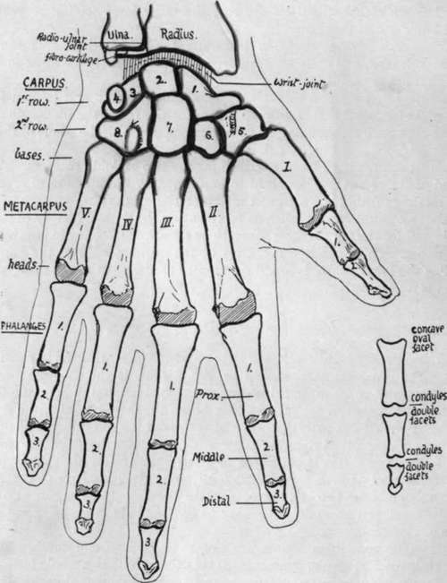

Hand
Description
This section is from the book "The Anatomy Of The Human Skeleton", by J. Ernest Frazer. Also available from Amazon: The anatomy of the human skeleton.
Hand
The skeleton of the hand consists of twenty-seven bones arranged in three divisions or groups. The proximal part, carried by the Radius, is the Carpus, consisting of eight small irregular bones arranged in two rows, proximal and distal: the distal row supports the metacarpus, a set of five long bones numbered from without inwards, articulating by their bases with the bones of the distal (or second) row of the carpus, and carrying on their distal rounded extremities, or heads, the proximal parts of the skeleton of the digits : this is composed of three phalanges in each finger numbered from the metacarpal as first, second, and third (or ungual) phalanx respectively, but the thumb only possesses two phalanges. Certain " sesamoid " bones are also normally found in the hand, but these do not belong to the bony skeleton, being modifications in tendons or ligaments.
Carpus
The constituent bones are closely applied to one another and firmly secured in their rows by strong ligaments, so that the carpus as a whole forms a strong bony and fibrous mass, concave on its palmar aspect and convex dorsally : the flexor tendons of the fingers occupy the concavity.
There are four bones in each row. These are shown, somewhat diagrammatically, in Fig. 82, and are named as follows :-First row : (1) Scaphoid (or Navicular), (2) Semilunar, (3) Cuneiform, (4) Pisiform.
Second row : (5) Trapezium, (6) Trapezoid, (7) Os Magnum, (8.) Unciform.
Each of these bones, with the exception of the pisiform, articulates with its neighbours in its own row, and in addition with bones above and below it. The articulations can be followed in the figure, where it can be seen that every one of the elements articulates with its neighbour, on both sides save in the case of the marginal bones ; but the other contacts are rather more complicated than this.
(1) Scaphoid has one side contact, with the semilunar. But it articulates with three bones below, trapezium, trapezoid, and os magnum ; above, with the radius.
(2) Semilunar : two side facets, for scaphoid and cuneiform : below, with os magnum and a small area of unciform : above, with radius and a small area of fibro-cartilage.
Fig. 82.-Semi-schematic outlines of bones of hand from the front. Description in text. Observe that the carpal and metacarpal bones are numbered from without inwards while the phalanges are numbered from above downwards. The smaller figure shows the distinctive features of the different phalanges.
(3) Cuneiform : with semilunar and pisiform, the latter really being in front of it, in conformity with the formation of the anterior concavity of the carpus : below, with unciform : above, with the triangular fibro-cartilage of the wrist.
(4) Pisiform : a very small bone, only articulating with the cuneiform.
The articulations of the distal row are-with their neighbours, with the proximal row above, and with the elements of the metacarpus below.
* Among the others the fifth metacarpal has most freedom, and that is not much : suggest this, and the movement is used in opposing the thumb.
the articular surfaces
(5) Trapezium : at the side, with trapezoid : above, with scaphoid : below, supports first metacarpal and also, owing to small size of trapezoid, helps to support second metacarpal.
(6) Trapezoid: at the sides, with trapezium and os magnum : above, with scaphoid : below, with second metacarpal.
(7) Os Magnum : at the sides, with trapezoid and unciform : above, with scaphoid and semilunar : below, with middle metacarpal and also second and fourth.
(8) Unciform : at the side, with os magnum : above, with cuneiform and semilunar : below, it supports the fourth and fifth metacarpals.
This account shows that only one bone, the trapezoid, articulates with a single metacarpal.
The appearance of the carpo-metacarpal articulation is enough to show that the bones are practically fixed there and that no appreciable movement can take place except in the thumb,* where the form of the joint surfaces indicates that movement can take place from side to side or from before backwards : this joint has a separate synovial cavity, whereas the others have a common cavity.
• The proximal row of carpal bones is immediately concerned in the wrist joint, and the curves of the articular surfaces on its upper aspect show that its range of movement at the wrist extends from before backward as well as from side to side. Observe that the joint surface on the scaphoid and semilunar is largely dorsal, more so than is necessary to correspond with the lower surface of the radius, which looks downward and slightly forward. It follows from this that the carpus can be extended on the radius to a greater extent than it can be flexed. The upper surface on the cuneiform is also somewhat dorsal in position, though to a less extent, thus agreeing with the plane of the fibro-cartilage.
When the hand is abducted or adducted the carpus moves round an anteroposterior axis passing through its centre-that is, when the hand is abducted or moved to the radial side, the first row of the carpus moves towards the ulna, the semilunar passing partly under the fibro cartilage ; but when the opposite and more extensive movement takes place the bones are moved outwards, and the cuneiform may come partly under the radius.
Observe that the scaphoid and semilunar form a socket for the reception of the os magnum (Fig. 83) : the cuneiform is kept from this by the articulations between semilunar and unciform. In this joint flexion and extension are possible between the two rows of carpal bones, and in fact the so-called flexion and extension of the wrist really takes place in the more advanced stages at this mid-carpal joint. The back rim of the socket is deeper than the front so that, in contrast with the wrist, extension is the more limited of the two movements.
Continue to: